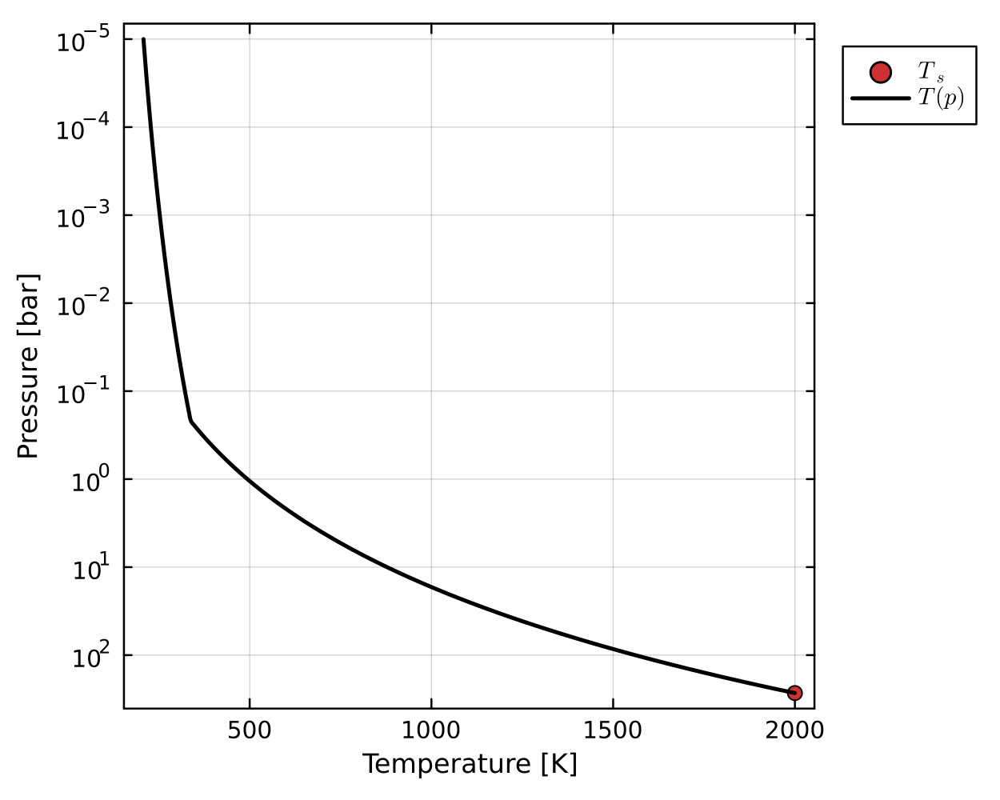
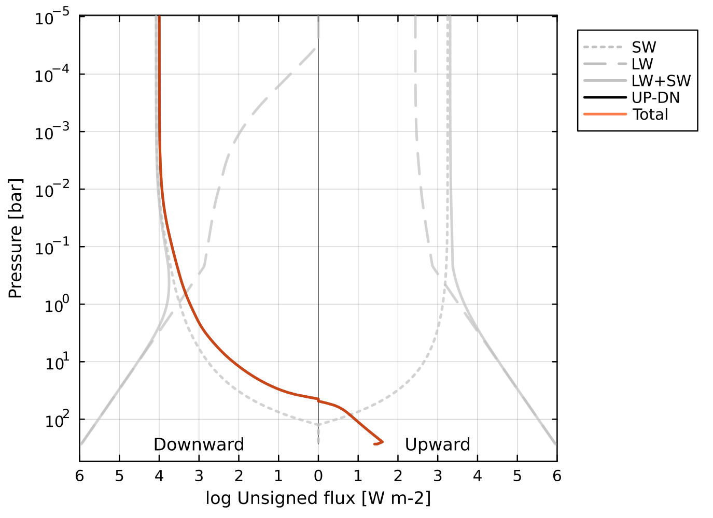
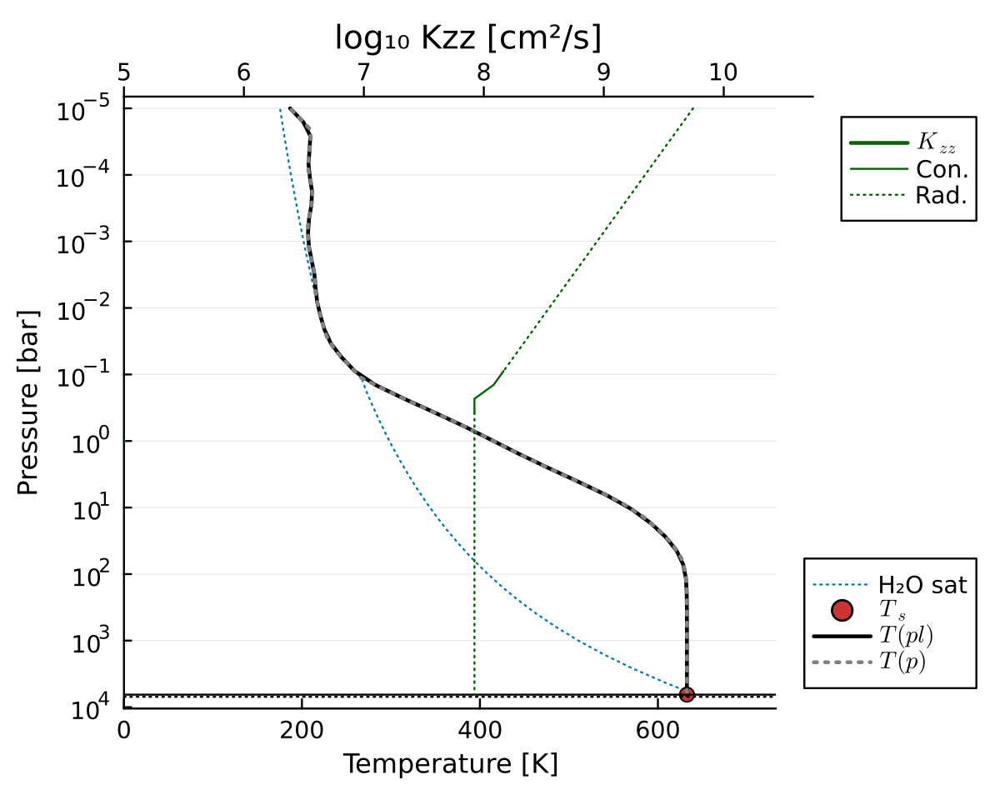
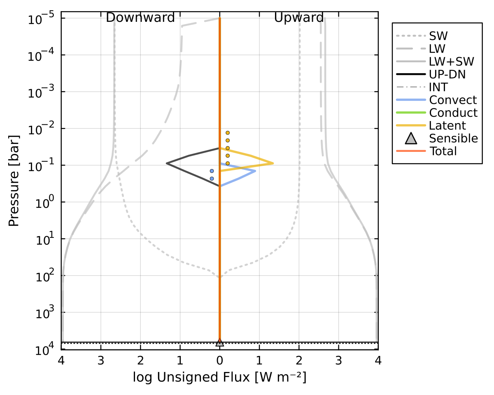
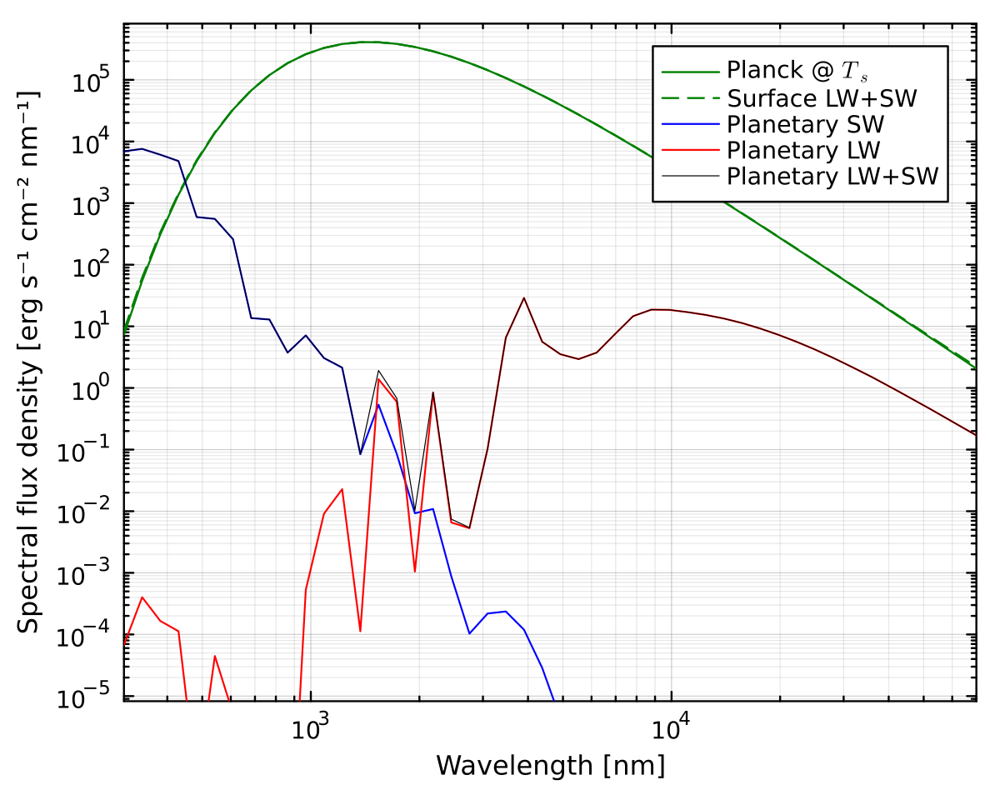
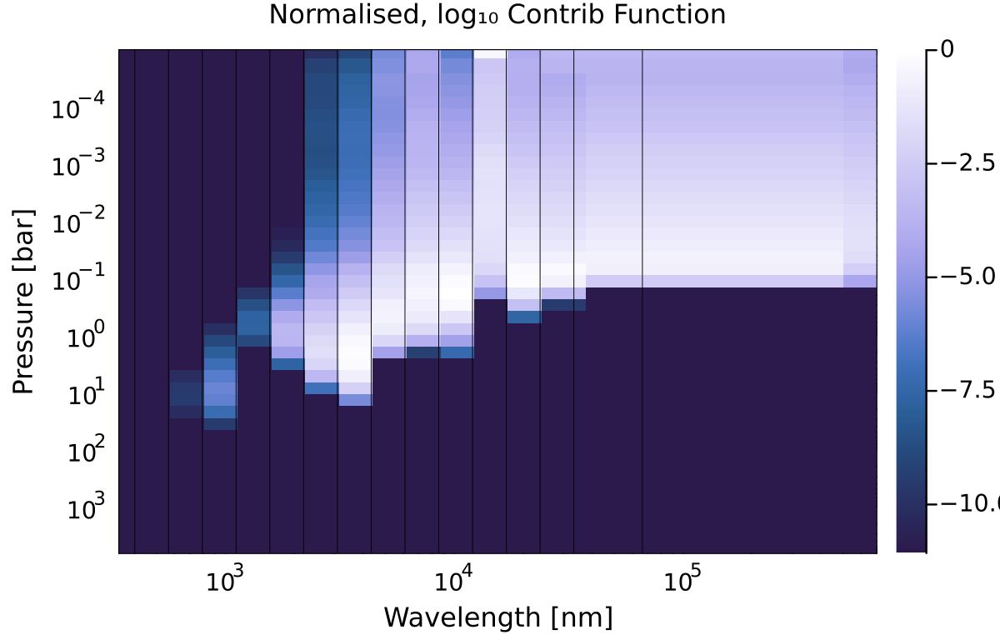
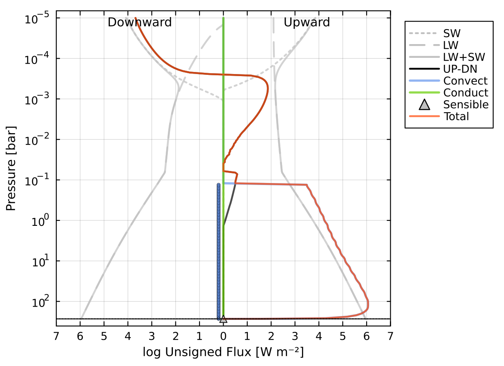
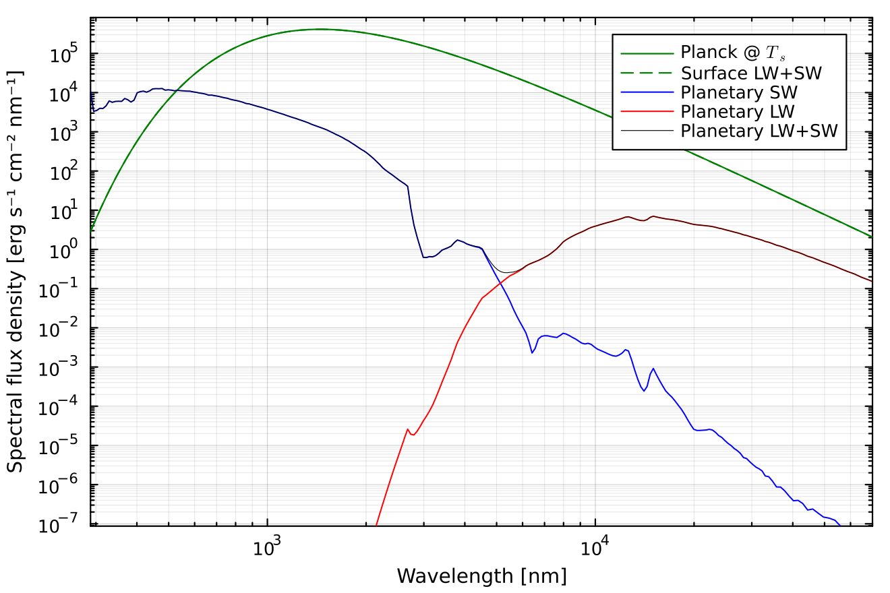
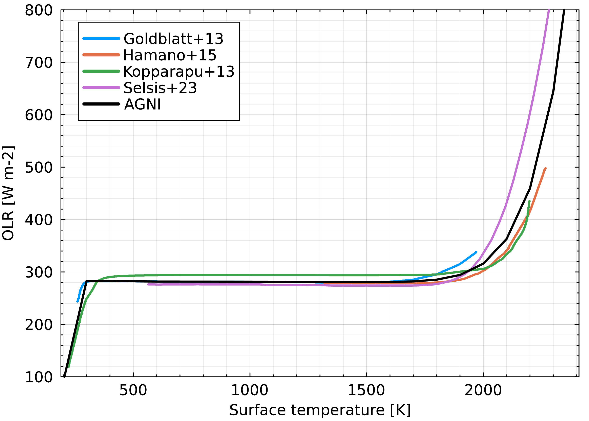

Tutorials
Tutorials are learning-oriented. They guide you through a series of steps so that you can get AGNI running and see what it can do. Start here if you are new to AGNI.
These examples illustrate the kinds of results AGNI can produce. You can find Jupyter notebooks which reproduce these results in the tutorials directory of the repository.
Your first calculation
So you want to run some standalone climate calculations? Let's start with a simple steam atmosphere with a temperature profile 'prescribed' to follow an adiabat.
Run AGNI with the default configuration file:
./agni.jl res/config/default.tomlYou should see the following output:
[ INFO ] Using configuration 'Default'
[ INFO ] Setting-up a new atmosphere struct
[ INFO ] Loading thermodynamic data
[ INFO ] Inserting stellar spectrum, Rayleigh coefficients
[ INFO ] Allocating atmosphere with initial composition:
[ INFO ] 1 H2O 1.00e+00 (EOS_AQUA)
[ INFO ] Setting T(p): dry, sat
[ INFO ] Solving with 'none'
[ INFO ] done
[ INFO ] Radiative transfer benchmarking statistics...
[ INFO ] total RT evals: 2
[ INFO ] cumulative time: 0.437389641 secs
[ INFO ] time per eval: 218.6948205 ms
[ INFO ] Writing results
[ INFO ] Plotting results
[ INFO ] Model runtime: 18.63 seconds
We can see a few things here. Firstly, AGNI tells us which configuration file it is using and starts the setup.
The line following "Allocating atmosphere with composition" is a table of gases, their volume mixing ratios, and flags. In this case there is only one gas. Potential flags for each gas species are:
EOS_[XX]- using the[XX]equation of state (e.g. ideal gas, AQUA)NO_OPACITY- no opacity data available, but can contribute to the thermodynamicsNO_THERMO- no thermodynamic data available, so will be treated as a diatomic ideal gasCOND- this gas is allowed to condense
Note that 'gas' here refers to a chemical species that generally, but not necessarily exists in as gas phase, so it could be supercritical or condensed.
The temperature profile is set the the dry adiabat with a saturated upper atmosphere.
No radiative-convective solution is requested here, so there is no solver to be called. Hence, the model outputs "Solving with none".
Output files are written to the directory specified in the configuration file (default: out/). This includes a NetCDF data file and various plots.

Radiative fluxes are then calculated according to this temperature profile. Because the profile is prescribed, the fluxes are not balanced locally or globally across the column.

Radiative-convective solution (command line)
Instead, we can model an atmosphere such that energy is globally and locally conserved. This is a state of radiative-convective equilibrium, although latent heat effects and conduction are also included.
To see this case, run the configuration used for the test suite:
./agni.jl test/test.tomlThe output now contains more details. Below, I have inserted inline comments to qualify the meaning of each section of the output log.
# Initial setup and memory allocation.
[ INFO ] Using configuration 'Unit tests configuration'
[ INFO ] Setting-up a new atmosphere struct
# Load thermo data from pre-computed tables, which are stored in the res/ folder.
[ INFO ] Loading thermodynamic data
# Sample the provided spectrum onto the correlated-k bands.
[ INFO ] Inserting stellar spectrum, Rayleigh coefficients
# Allocate arrays for storing gas mixing ratios, etc.
[ INFO ] Allocating atmosphere with initial composition:
[ INFO ] 1 H2O 1.11e-01 (COND EOS_IDEAL)
[ INFO ] 2 CO2 8.33e-01 (EOS_IDEAL)
[ INFO ] 3 N2 5.56e-02 (EOS_IDEAL)
# Set the initial temperature profile to be isothermal.
[ INFO ] Setting T(p): iso
# We will solve for RCE using a damped Newton Optimisation method.
# Sol_type means to solve for a particular flux_int, or equivalently, Tint.
# Here, we the configuration file specifies Tint=0 K.
[ INFO ] Solving with 'newton'
[ INFO ] sol_type = 3, conv_type = 1
[ INFO ] flux_int = 0.00 W m-2
# Begin iterations to solve for RCE, up to a specified tolerance.
# The 'cost' function decreases as we eventually converge upon a solution.
[ INFO ] step |res_med| cost flux_OLR max(x) max(|dx|) flags
[ INFO ] 1 3.310e+01 1.119e+06 1.361e+04 7.010e+02 1.500e-03 Cs-M-C2-Ls
[ INFO ] 2 2.924e+01 2.197e+05 5.778e+03 6.803e+02 1.500e+02 Cs-M-C2
[ INFO ] 3 1.655e+01 1.315e+04 2.008e+03 6.142e+02 1.500e+02 Cs-M-C2
[ INFO ] 4 5.056e+00 3.188e+02 7.977e+02 6.276e+02 1.027e+02 Cs-M-C2
[ INFO ] 5 1.829e+00 1.198e+02 4.706e+02 6.302e+02 7.784e+01 Cs-M-C2
[ INFO ] 6 3.314e-01 2.484e+01 3.845e+02 6.322e+02 7.669e+01 Cs-M-C2
[ INFO ] 7 6.487e-02 2.404e+01 3.720e+02 6.324e+02 4.582e+01 Cs-M-C2
[ INFO ] 8 2.006e-02 2.715e+01 3.732e+02 6.325e+02 1.430e+01 Cs-M-C2
[ INFO ] 9 2.135e-02 1.772e+01 3.491e+02 6.327e+02 1.530e+01 Cs-M-C2
[ INFO ] 10 3.596e-03 6.479e+00 3.517e+02 6.327e+02 4.241e+00 Cs-M-C2
[ INFO ] 11 7.630e-04 7.853e+00 3.462e+02 6.327e+02 4.367e+00 Cs-Mr-C2-Ls
[ INFO ] 12 2.962e-04 1.612e+00 3.446e+02 6.327e+02 1.224e+00 Cs-Mr-C2
[ INFO ] 13 1.698e-04 4.021e+00 3.441e+02 6.327e+02 6.182e-01 Cs-Mr-C2
[ INFO ] 14 6.885e-04 1.298e+01 3.412e+02 6.327e+02 5.994e-01 Cs-Mr-C2
[ INFO ] 15 9.680e-04 1.078e+02 3.475e+02 6.327e+02 2.234e+00 Cs-M-C2-Ls
[ INFO ] 16 1.489e-03 1.601e+01 3.450e+02 6.327e+02 1.832e+00 Cs-M-C2
[ INFO ] 17 3.372e-04 1.145e+01 3.421e+02 6.327e+02 4.160e-01 Cs-M-C2
[ INFO ] 18 2.949e-04 3.664e+01 3.440e+02 6.327e+02 1.666e+00 Cs-M-C2-Ls
[ INFO ] 19 4.438e-04 5.535e+00 3.453e+02 6.327e+02 7.897e-01 Cs-M-C2
[ INFO ] 20 1.765e-04 2.354e+00 3.454e+02 6.327e+02 2.167e-01 Cs-Mr-C2
[ INFO ] 21 1.625e-04 1.381e+00 3.455e+02 6.327e+02 1.386e-01 Cs-Mr-C2
[ INFO ] 22 1.598e-04 1.478e+00 3.454e+02 6.327e+02 2.909e-01 Cs-Mr-C2-Ls
[ INFO ] 23 2.287e-04 1.793e+00 3.452e+02 6.327e+02 5.355e-01 Cs-Mr-C2-Ls
[ INFO ] 24 4.640e-04 2.384e+00 3.449e+02 6.326e+02 1.002e+00 Cs-Mr-C2
[ INFO ] 25 1.365e-03 3.780e+00 3.444e+02 6.326e+02 1.882e+00 Cs-Mr-C2
[ INFO ] 26 2.153e-03 6.138e+00 3.432e+02 6.326e+02 3.277e+00 Cs-Mr-C2
[ INFO ] 27 2.802e-03 5.326e+00 3.430e+02 6.326e+02 2.846e+00 Cs-Mr-C2
[ INFO ] 28 6.560e-04 3.686e+00 3.443e+02 6.326e+02 6.242e-01 Cs-C2-Ls
[ INFO ] 29 2.976e-04 3.962e+00 3.455e+02 6.326e+02 5.136e-01 Cs-C2-Ls
[ INFO ] 30 6.007e-05 2.412e+00 3.456e+02 6.326e+02 1.653e-01 Cs-C2
[ INFO ] 31 2.877e-06 3.662e-01 3.455e+02 6.326e+02 6.625e-02 Cs-C2
[ INFO ] success in 31 steps
# Convergence information about the final state.
# The tolerance in the configuration file means that 0.36 W/m^2 of energy is lost.
[ INFO ] total flux at TOA = -1.03e-02 W m-2
[ INFO ] total flux at BOA = +1.10e-06 W m-2
[ INFO ] global flux loss = +3.63e-01 W m-2 (+1.21e+02 %)
[ INFO ] final conv.value = +3.66e-01 W m-2
[ INFO ] surf temperature = 632.616 K
[ INFO ] surf pressure = 6.485e+03 bar
[ INFO ] done
# SOCRATES radiative transfer performance (can be disabled in config).
[ INFO ] Radiative transfer benchmarking statistics...
[ INFO ] total RT evals: 5943
[ INFO ] cumulative time: 15.648886829 secs
[ INFO ] time per eval: 2.6331628519266363 ms
# Final surface temperature is less than the dew point of steam, so the surface is super-saturated and an ocean is rained out.
[ INFO ] Surface liquid H2O mass: 2.61e+06 kg/m^2
# Given the ocean basin geometry in the config, this corresponds to a water world.
[ INFO ] Oceans cover 100% area, max depth 3.92292 km
# Final information is written and plots are created (see below).
[ INFO ] Writing results
[ INFO ] Plotting results
[ INFO ] Model runtime: 33.25 secondsThe final temperature profile is plotted in the output folder. It shows a near-isothermal stratosphere and near-isothermal deep radiative region (since Tint=0).

Convection is parameterised using mixing length theory in this case, allowing the system to be solved using a Newton-Raphson method. In the convective region at ~0.1 bar, we can see that the radiative fluxes and convective fluxes entirely cancel, because AGNI was asked to solve for a case with zero total flux transport. The MLT convection scheme also estimates the Kzz profile shown in the T(p) plot.

We can also plot the outgoing emission spectrum and normalised longwave contribution function (CF). The spectrum clearly demonstrates complex spectral absorption features, and exceeds blackbody emission at shorter wavelengths due to Rayleigh scattering.

The CF quantifies how much each pressure level contributes to the outgoing emission spectrum at agiven wavelength – this is then plotted versus wavelength and pressure.

To view the output data, we can use the ncdump command line utility. This data could also be read by Julia and Python libraries.
ncdump -h out/atm.ncFrom this, we get a lot of output. These include all the spectral fluxes, gas profiles, thermodynamic profiles, and metadata. The header information should look something like this:
// global attributes:
:description = "AGNI atmosphere data" ;
:date = "2026-May-25 07:41:21" ;
:hostname = "your_computer_name" ;
:username = "your_username" ;
:AGNI_version = "1.10.3" ;
:SOCRATES_version = "2603.7" ;
:SOCRATES_precision = "double" ;
:name = "41a2d25b" ;
:platform = "your_operating_system" ;Aerosol radiative properties (command line)
AGNI incorporates the radiative effects of aerosols and clouds in the atmosphere. The model supports arbitrary aerosol types, based on Mie theory. Pre-computed aerosol types include soot, ash, sulfate, and nitrate particles.
In the example below, an atmosphere is configured with three aerosol species at different concentrations. The configuration file is located at res/config/physics/aerosols.toml
The plot below shows the enforced mixing ratio profiles of the aerosols. Water is plotted with a dotted line because its ratiative effects are disabled in this example. 
Aerosols modify both shortwave and longwave radiative transfer. The flux profiles below show how aerosols alter the vertical distribution of radiative heating and cooling. Importantly, the shortwave stellar radiation is largely reflected and attenuated at low pressures.

The emission spectrum highlights the fingerprint of the aerosols. The plot shows a distinct shortwave contribution (blue line) due to back-scattering from the aerosols specifically, with some identifiable features.

Pure steam runaway greenhouse limit (notebook)
By assuming the atmosphere temperature profile follows a dry adiabat and the water vapour-condensate coexistence curve defined by the Clausius-Clapeyron relation, we see a characteristic relationship between the outgoing longwave radiation (OLR) and the surface temperature ($T_s$). Initially OLR increases with $T_s$, but as the condensing layer (which is independent of $T_s$) overlaps with the photosphere, OLR and $T_s$ decouple. Eventually the atmosphere reaches a dry post-runaway state, and OLR increases rapidly with $T_s$.
